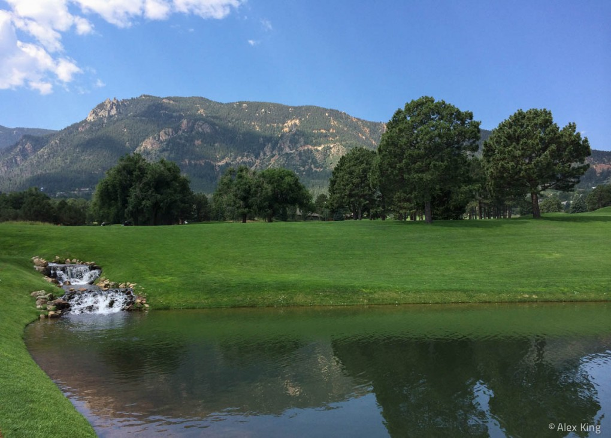

My lower body is much more stable than it used to be, but I’m still collapsing my wrists and letting the club go too far around my body at the top.
My lower body is much more stable than it used to be, but I’m still collapsing my wrists and letting the club go too far around my body at the top.

I had a chance to play the Broadmoor West and East courses a few weeks back. The West course wasn’t bad, but the East course was definitely the winner. The greens were fast and undulating but the fairways and landing areas were fairly generous and the course was very playable – especially for a course that has recently hosted the US Senior Open and the US Women’s Open.
I’d never played a course like Chamber’s Bay before.
It’s carved into the side of a hill, extending down towards the water. There are bunkers and native grasses everywhere. The greens are indistinguishable from the fairways in traditional links style, and were somewhat slow and with a good bit of undulation. Some holes have a good bit of altitude change, while others are more straightforward.
Driving it straight here is a necessity.
There are no golf carts. You can carry or pull/pull, or take a caddy. We opted for the latter, and it was a good experience. Even walking without a bag I was exhausted by the end of the round. This is a tough walk.
I struggled out of the gate with a quad bogey and a double bogey before settling down to card an 86 (I 3-putted the last 2 holes too  ). I never did get the speed of the greens even remotely right, but I hit it pretty straight off the tee.
). I never did get the speed of the greens even remotely right, but I hit it pretty straight off the tee.
(We teed off on the 10th hole)
(view from the cart path above the 2nd hole) Golden Eagle is a little further north past Deacon’s Lodge. The course was cut beautifully through the trees and valleys, with several holes requiring forced carries over native areas. The tee boxes, fairways, sand traps and greens were all in great shape and the greens were…
A young man and a priest are playing together. At a short par-3 the priest asks, “What are you going to use on this hole, my son?” The young man says, “An 8-iron, father. How about you?” The priest says, “I’m going to hit a soft seven and pray.” The young man hits his 8-iron…
The course was in great shape for the early season in Breckenridge.
Forest Hills Golf Club is touted as the best public golf course in the Augusta area. It’s definitely a nice course, especially for the normal rare of $25/round. Of course I played during Masters week, when they jack the price up to $125/round (and included cart, range balls and a pretty meager sandwich). The track…
This is a great interview with Jim “Bones” Mackey after Phil’s win at the Open Championship in 2013.
This may be my favorite course in Minnesota. It’s been in immaculate condition both times I’ve played it, the greens are fast and true, and it combines beautiful looking holes with a good deal of trouble – especially for poor tee shots. If you keep the ball in play, there are some good scoring opportunities.…
Whitebirch Golf Course is a short course with a few narrow fairways and undulating greens. A few holes also have raised tee boxes and greens (hit down to the fairway, back up to the green) and are framed by trees and forest. There is some water, etc. but it doesn’t come into play on most…
So awesome.
Too funny.
Today I shot 79 at Coal Creek – my first round in the 70’s in several years (I haven’t been there consistently since 2006). The lessons I took this year have definitely helped. I wasn’t expecting much today. I’d taken my daughter to the driving range yesterday and really hacked it up. I was late…